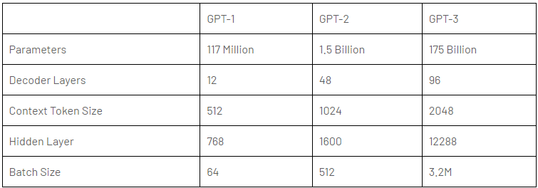

28 SEPT 2024 | BY EMILY LOH
Generated image of robot and human fingers meeting at the center
Times have changed and people are now equipped with generative AI, a tool that can create ideas comparable to those of an average person. All sorts of things appear with this tool: AI art, AI photos, AI music, AI singing, AI voices, AI this, and AI that. So many things can be created just with a simple command.
With this tool, I have ventured around different hobbies to find out which would benefit most from Gen AI. This month, I decided to try out what creative writing would look like in the scope of Gen AI. Here’s a little on how I wrapped up the month of September with a little messy AI project, one that I would definitely come back for more practice on.
My Writing Career
When I was in elementary school, teachers and students held an annual young author’s fair which required all the students to create their books. I picked up this hobby of writing books through this yearly event and found it thrilling to create stories. I spent countless hours my preteen years creating stories I wished to see. For every movie, book, or drama series that didn’t end the way I wanted it to or had little screen time for my favorite minor characters, I created my rendition of their fictional worlds and made my imagination come to life.
I smashed it all together and boiled up a mess of a plot every single time. But the more I wrote, the more detailed my stories grew and the more impactful my plots became. What started as a self-indulging hobby spread into an online presence of thousands of readers. Although I am no skilled writer (and have no plans to take the career path of an author), I still really enjoyed creating something out of my imagination.
As I grew older, I started overthinking how I wrote, creating an intricate plan before putting the writing into action. The pressure of delivering something that could measure up with my years of experience got to me and that resulted in a lot of writer’s block. I became too impatient to write and often gave up early in the brainstorming phase because this was a writing style I was not used to. Even if a melting pot of ideas was a stupid move as a writer, it was truly what I enjoyed in my teenage years, afterall, I did start writing for myself to read and look back upon.
With over a dozen ideas I formulated in my college years, I wished I could have created something out of them instead of brainstorming and leaving them in the dump to rot and never grow into something more.
So, I decided why not use generative AI? A little boost into my writing can kick-start something really fun. Using AI, I can come up with my storyline but have the AI execute my vision! As LLMs improve, I could be creating and reading my stories every night to sleep and I wouldn’t have it any other way. I don’t want my “growing up” to be a lame excuse as to why I can’t still enjoy an old hobby. So let’s try it out!
Write Like Me
Developing this was a lot harder than I had initially thought it would be. For many other AI projects and practices I’ve tried before, datasets were usually provided or I could find many of them on the internet. But, this time, I wanted to work from my data. So I had to create my dataset manually. It was hard and still quite unfinished; afterall, 50+ entries is not enough to teach any model to do anything.
I also decided to work with GPT-2 which proved to be a big learning mistake. With GPT-2, I wanted to achieve some decent results from querying the model. On a budget, I didn’t want to spend money on working with a higher-end GPT but, with the results I got, I am debating on trying out GPT-3 for this project.
I focused on fine-tuning and changing a lot of numerical values to get some form of result that I wanted. I did reach a lot of obstacles on the way to something decent and, even then, it was not perfect. Because of the small dataset, I tried to avoid overfitting the model and controlled the learning rate. I tested some different numbers of epochs but, even though in most cases some more training is good, I could only work with 1 or 2 epochs because the dataset was too small. The project was flawed from the beginning: I didn’t have enough data to work with. Because my writing works are scattered from numerous different platforms (Google Docs, Notion, Wattpad, Fanfiction.net, Wavemaker, my physical writing notebooks, and piles of loose papers), it was too difficult to find code to parse my works because it involved so much data gathering and typing in the first place.
Arguably, I could test this on somebody else’s dataset but many other datasets were made to create a model to write coherent works. My goal was to write coherent works that sounded like my writing; hence, the foundation model (in our case, GPT-2) should be good enough to create writing already. The point of this project was to learn and understand what you can do with generative AI, how it is done, and what prompt engineering looks like.
Results & Why
I went through a lot of changes on token length, temperature/influence of my writing, learning rate, epochs, batch value, the way I prompted, and a handful of other things but nothing seemed to reach my expectations. And, for context, here were some of the results I got from testing, seemingly normal prompts:
“Once upon a time, there was a girl named Mia who wanted to explore the cosmos...but she was stranded. She was stranded on a small island in the middle of the ocean. She had no way to get to land and land on land. She had no way to get to land. She had no way to get to land. She had no way to land. And she had no way to land. And she had no way to land.”
or…
“The next day, Luna and I are walking down the street when we see a man in a suit standing at the corner of the road. The man looks around for a moment before turning to me and saying "Hello.” "Hi," I say as I turn around to face him. He smiles warmly and waves at us. "I'm Luna Lovegood."
He nods back and says "Good morning."
Luna turns her head to look at him and then back to me. She gives me a small smile and says "You're my friend."”
Nothing seems to make sense. Occasionally, the output would just be the prompt regurgitated back or the repetition would get so out of hand that nothing substantial was even said. Even the most normal conversation (depicted above), did not make sense. Why would Luna introduce herself to her friend? I had endless responses just like these and couldn’t find out exactly what was causing this issue.
I could only conclude that, one, my dataset was simply too small for the model to base my writing on. When it took too much of my writing, it made nonsensical stories about young female protagonists who met their idols in the city of Seoul while going to school there even though the plot I requested was about a girl stranded in space. Two: I was working with GPT-2. At first, I thought GPT-2 was enough but I asked GPT-4 (current ChatGPT) why my code was acting this way, it suggested I try a different LLM. Turns out, while GPT-2 was great at understanding smaller instructions, it struggled with the more complex ones. Take this for an example, I told GPT-2 to create a story about a girl landing on the moon and I liked the reply but I wanted it to expand:
“Write what happened after.”
“.”
Instead of continuing the story, it returned a period punctuation mark. I would suspect that the model took it literally, to write the period that happened after the sentence. It’s easy to see that the model didn’t understand what I was trying to say even with the historical context of the chat ingrained in the production of the story.
Chart by Bharani Kumar depicting the differences between OpenAI GPT models
You can easily say that GPT-2 is simply just not as good as the later models of GPT. So the little fine tuning of the model wasn’t as big of a problem than my dataset and pretrained model. But there was one more issue: prompt engineering.
While we can naively believe that virtual assistants can understand us very well, it is obvious that there is much more to context and nuances as well as trends and structure that technology is still learning. It is only natural that older models have a harder time understanding what you are saying if you aren’t detailed enough. To come up with a detailed yet straightforward prompt can be difficult, I would have to do more practice on prompt engineering and understanding the model I am working with.
Comparing Some LLMs
There are so many LLMs I could try out and so many things we can do with the technology made today. First of all, LLMs are large language models which are a big part of natural language processing (NLP) in our technology these days. It allows machines to perform a lot of language-related tasks such as inquiring for more information by asking the machine like a human. With this project, I studied different LLMs that I could use, especially after finding out GPT-2 might not be the best tool out right now, even if it’s free.
GPT-2 was created around five years ago and is outdated compared to a lot that we have right now but back then, it was a significant improvement in understanding human-like text and generating it. It did the basics of generating grammatically correct text and was coherent. It did lack some essence of deeper context understanding and was often factually incorrect due to biases. Then GPT-3 was created which introduced a huge increase in parameters, letting it be significantly more flexible. It is one of the more commonly used models when ChatGPT boomed since it was good at summarization, code generation, and other tasks. Now, we have GPT-4 which proves to work better with complex interactions and includes more human-like responses, working with a larger limit of text and more creative and human tasks. I would think GPT-4 would work best to learn my writing style to create text! This would be the next move I would try on this writing project.
LLaMA and Claude are popular choices as well in this realm. LLaMA has the ability to work with multiple languages and multiple cultural backgrounds. This can remove a lot of social bias that people are worried about. It’s an amazing model to use for working in global contexts. Claude, on the other hand, focuses on the human emotional aspect and stretches more on empathy. It makes it a great tool for mental health virtual assistance which gives me an idea for my own projects. It works well with a large amount of text like attaching a PDF file to it’s virtual assistant can get a lot of results.
Overall, each model serves different needs and wants. Understanding which model does well for what kind of context is so important when creating LLM related AI projects. This is something I didn’t learn before in academia. It is important to understand our tools well to know which one to use. Afterall, there’s even a big difference between a nail and a screw.
Next Steps in AI
Wow, that has been quite the mess. Starting all these projects, I didn’t think there could be so many things that could go wrong. With AI, programming slightly differently, researching slightly more, can produce so many different results. Even the fact that my device can run the project or that I have the money to purchase a GPT can change my results significantly. Looking at this project, there is so much more I can do with just testing new things out.
I hope to dust off the dust on this project and create an even better result in the near future as I practice and learn more about AI, combining my academic foundations and new learnings. Having done four short AI projects and spent most of my time researching what fun projects I could try out, I find myself enjoying and loving every new aspect of artificial intelligence. This has been an amazing September experience where I challenged myself every week to new AI topics! I will always look forward to learning more AI any time and will prepare for an even more challenging month of AI in the near future!